Lab 2 Placeholder
I’ve taken a screenshot of my folder in the temporary workspace area and placed it in a pictures folder.
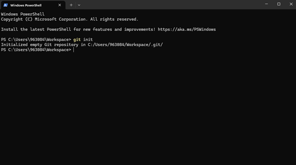Then I used the git init command to create a local repo.
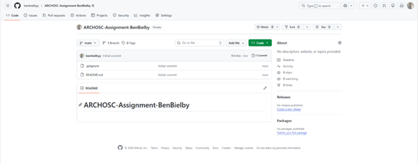This is my new GitHub repo that I created using the GUI on the GitHub website.
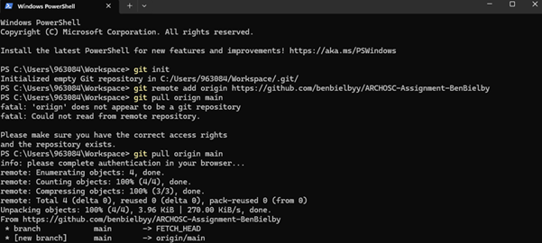I then linked my local repo to the online repo using git remote add origin, and then pulled the GitHub generated information which was just the Readme file.
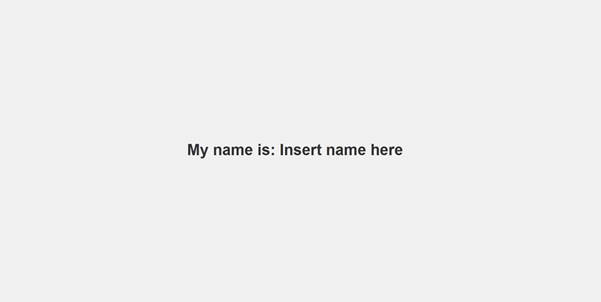I copied the code into Visual Studio Code, saved it into my assignment folder and ran it to check it worked.

I used git status to show which files haven’t been tracked, then added them with git add . which adds all files. Next I checked the status again to confirm all files were ready and committed them with an appropriate log message.
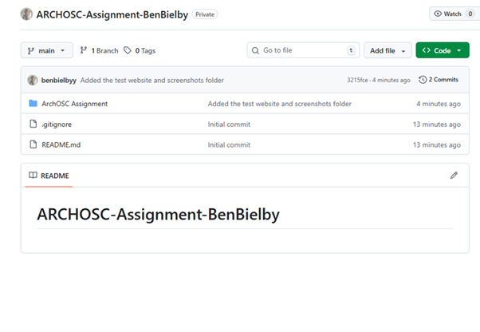 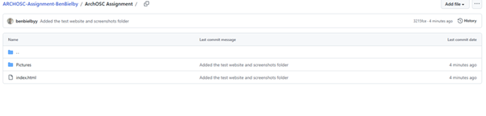I pushed the files to the online repo and checked that it reflected my local file structure.


The first of two required changed I made was adding an example username and password form.
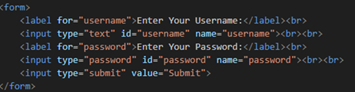 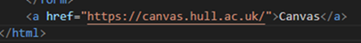Finally I added an example link that takes the user to the hull uni canvas page.
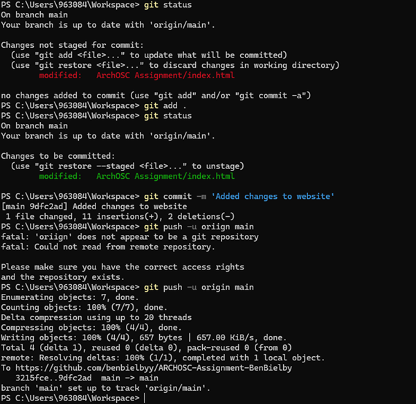I then added the file and committed it with a brief description saying I added my own changes to the website then I pushed it to the online repo.
 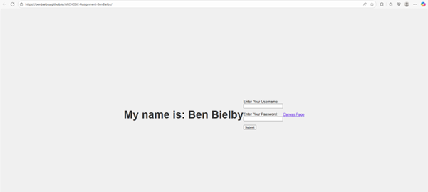
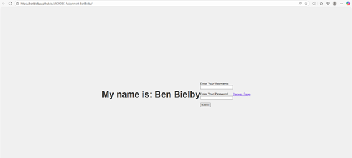
I then used the pages feature on GitHub to deploy my site.
In this lab I used git from the command line to upload and push my website and files I created to my online GitHub repo. From there I used github pages to make an online website and annotated the page with descriptions of what i've done from my word doc.